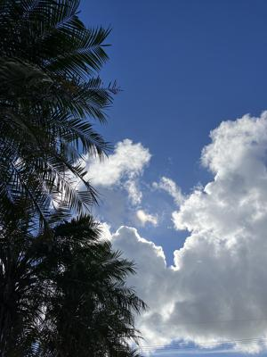
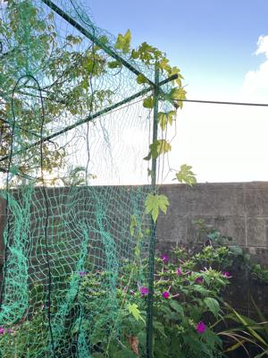
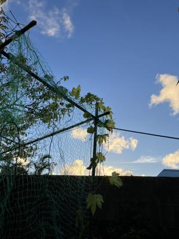

うるがいの話 ある日
最新: ゴヤーの棚【うるがいの話 ある日】とは 一日だけのプログです
『うるがいの話』の最新一日だけのプログで、通信料が少なく経済的だ。カニの画像をクリックすると全ての日付が載る『うるがいの話』サイトを表示します
|
|
【うるがいの話】 うるがい(ｳﾙｶﾞｲ urugai)とは、『もずくがに』の名前でとても大きくなります。 |
|---|---|
|
|
【カミマヤーの話】 猫のことを方言でマヤーといいます。カミマヤー（kamimayaa）とは、神の猫のことです。 |
|
【たながぁの音楽】 たながぁ（ﾀﾅｶﾞｰ tanagaa）とは手長えびのことで、何種類かあり大きいのは車 エビぐらいになります。 |

|
【ぶながぁの話】 ぶながぁ(ﾌﾞﾅｶﾞｰ bunagaa)とは、赤い髪の毛、赤い身体、そして身長は１ｍ２０ｃｍ ぐらい、川の蟹を食べているの目撃された。場所は沖縄県国頭郡大宜味村のと ある村僕の隣近所に住んでいる爺さんから、聞いた話です。 |
|
|
【ギーマの話】 ギーマ(giima)とは、山原の里山に咲くスズランに似た、 花を付けます。実は食べられます、 気が付くと口の周りが紫になっています。 |
2024年07月14日 (日）ゴヤーの棚
16:46
  
３月に植えたゴヤーがそろそろ、賞味期限になりそうである。二つのうち、
一つはまともに実をつけず、頑張っている優秀なゴヤーも新しい実をつけな
くなった。先週、メイクマンへいったついでにゴヤーの苗を買おうとしたと
ころ売ってなかった。ほー、仕方ないのでヘチマの苗を二つかったところで
ある。ところで、玄関の鳳仙花の鉢に、ヨメが種をまいたゴヤーがいつの間
にか大きくなり、ひ弱ながらも２メートルも伸びていることを発見。しめし
め、ダメもとで棚を作って育ててみるかと、巻き付いていたアリアケカズラ
の蔓から、ゴヤーの蔓を外し裏庭にとりあえず鉢を移動した。そのことをヨ
メが知ると、怒られた。せっかく楽しみで育てていたのに！と。うむ、これ
は真剣に棚を作って育ててないとと、昨日ジョギングを諦めて夕方、裏の畑
もどきに棚をつくり、鉢から直接地面に植えた。何も植えていない畑、固く
なった土、なんとか穴を掘り、メイクマンの土を埋める。ついでに、ヘチマ
の苗も植えた。台風がきたら一発で棚はやられるのだが、いまのところ台風
は来そうにない。それにしても暑い！、今年の夏は暑い。さきほど、ベラン
ダから棚をみると、ゴヤーの黄色い花が咲いていた。
１６時４１分 ビットコインの総資産 ￥２７、４７８（↑２３７）